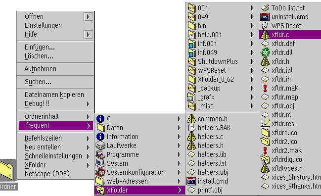

Klasse: XFolder
XFolder bietet Ihnen die M”glichkeit, den Inhalt bestimmter Ordner ber
die Kontextmens ansehen zu k”nnen, ohne diese Ordner ”ffnen
zu mssen. Dies kann sehr praktisch sein, wenn Sie eine bestimmte Datei
aus einem Ordner ”ffnen mssen, ohne sich durch ein Dutzend Ordner
klicken zu wollen.
Hier ist ein Beispiel (das XFolder-Entwicklungsverzeichnis von der Festplatte
des Autors):

Wie Sie sehen k”nnen, wird der Inhalt des "XFolder"-Ordners angezeigt;
die Unterordner in diesem Ordner fhren zu weiteren Untermens.
Diese "Ordnerinhalt"-Mens verhalten sich genau wie diejenigen des
WarpCenters: wenn Sie auf ein Element klicken, wird seine Standardanzeige
ge”ffnet. Wenn Sie auf ein Ordner-Element klicken, ”ffnet sich
ein weiteres Untermen mit dessen Inhalt; wenn Sie mit der Maustaste
2 auf ein Ordner-Element klicken, wird hingegen das Ordnerfenster ge”ffnet.
Die "Ordnerinhalt"-Funktionen werden in zwei verschiedenen Situationen verwendet:
- Zum einen k”nnen Sie bestimmen, daá der
Inhalt desjenigen Ordners, dessen Kontextmen Sie ge”ffnet haben,
in eben diesem Kontextmen angezeigt wird. Der entsprechende Menpunkt
heiát dann (wie berraschend) "Ordnerinhalt". Infolgedessen ist das Men
"Ordnerinhalt" bei jedem Kontextmen anders.
Diese Funktion l„át sich auf den "Kontextmen"-Seiten im
neuen Objekt "Workplace Shell" ein- und ausschalten.
- Zweitens k”nnen Sie bestimmte Ordner zu Ihren
"bevorzugten Ordnern" erkl„ren. Dies geschieht ber die Seite
"Anzeige" in jedem Ordner-Einstellungsnotizbuch. Alle diese bevorzugten Ordner
werden in allen Kontextmens angezeigt; Sie k”nnen zum Beispiel
diese Funktion fr die Arbeitsoberfl„che anschalten und dann die
Arbeitsoberfl„che und alle Objekte, die in derer Hierarchie darunter
liegen, von allen Ordnern aus erreichen. (Dies funktioniert brigens
auch mit dem "Laufwerke"-Ordner.)
In dem obigen Bild ist der Ordner "frequent" ein Ordner auf meiner Arbeitsoberfl„che,
in den ich Objekte stelle, die ich h„ufig gebrauche. Ich habe diesen
Ordner zu meinem einzigen "bevorzugten Ordner" erkl„rt, so daá sich
dessen Objekte in allen Kontextmens wiederfinden.